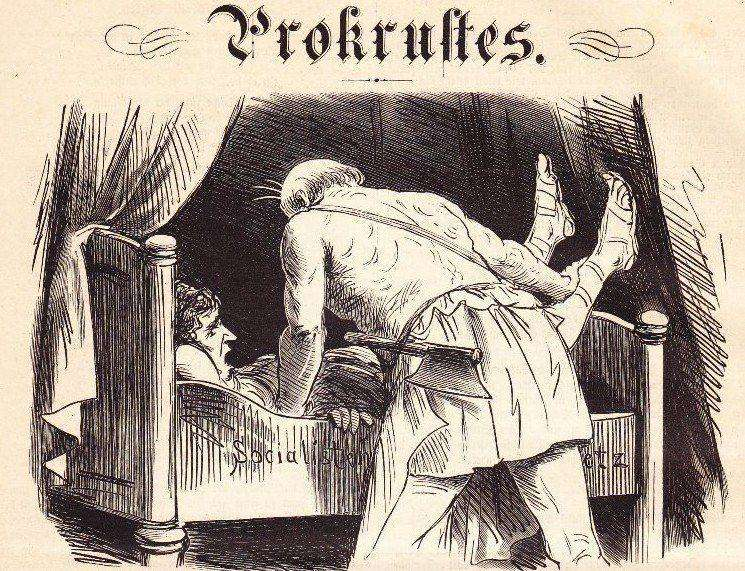

If something looks irrational – and has been so for a long time – odds are you have a wrong definition of rationality.
– Nicholas Nassim Taleb

Those who can’t do shouldn’t teach.
The general principle of antifragility: it is much better to do things you cannot explain than explain things you cannot do.
In the medical and social domains, treatment should never be equivalent to silencing symptoms.
You never win an argument until they attack your person.
Religion isn’t so much about telling man that there is one God as about preventing man from thinking that he is God.”
Atheists are just modern versions of religious fundamentalists: both take religion too literally.
Education makes the wise slightly wiser, but it makes the fool vastly more dangerous.
Technology can degrade (and endanger) every aspect of a sucker’s life while convincing him that it is becoming more “efficient.”
The twentieth century was the bankruptcy of the social utopia; the twenty-first will be that of the technological one.
The calamity of the information age is that the toxicity of data increases much faster than its benefits.
Social media are severely antisocial, health foods are empirically unhealthy, knowledge workers are very ignorant, and social sciences aren’t scientific at all.
Most mistakes get worse when you try to correct them.
Soldiers are more loyal to their comrades (and willing to die for them) than to their country. Academics are more loyal to their peers than to truth.
The classical man’s worst fear was inglorious death; the modern man’s worst fear is just death.
All rumors about a public figure are to be deemed untrue until he threatens to sue.
Verbal threat is the most authentic certificate of impotence.
To bankrupt a fool, give him information.
Any action one takes with the aim of winning an award, any award, corrupts to the core.
If you know, in the morning, what your day looks like with any precision, you are a little bit dead – the more precision, the more dead you are.
If my detractors knew me better they would hate me even more.
The Title of the Book
This leads to sucker problems: when the map does not correspond to the territory, there is a certain category of fool – the overeducated, the academic, the journalist, the newspaper reader, the mechanistic “scientist,” the pseudo-empiricist, those endowed with what I call “epistemic arrogance,” this wonderful ability to discount what they did not see, the unobserved – who enter a state of denial, imagining the territory as fitting his map.
More generally, the fool here is someone who does the wrong reduction for the sake of reduction, or removes something essential, cutting off the legs, or, better, part of the head of a visitor while insisting that he preserved his persona with 95 percent accuracy. Look around at the Procrustean beds we’ve created, some beneficial, some more questionable: regulations, top-down governments, academia, gyms, commutes, high-rise office buildings, involuntary human relationships, employment, etc.